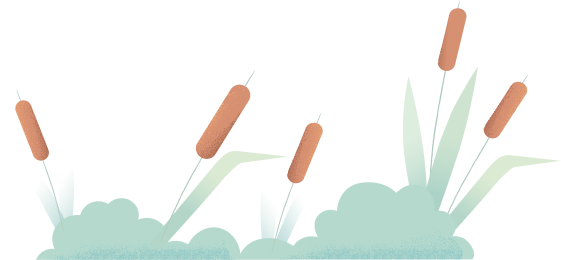

درباره ما
گروه خلاقیت دیجیتال اند لس تشکیل شده از دانشجوهای جوان و پرشوریه که گردهم اومدن تا با در نظر گرفتن دغدغه های کاربر ها محصولات کاربردی ای رو بسازن و روانه ی بازار کنن.
وب نرم افزار مدیریت اراضی آباک اولین محصول این تیمه که با هدف ایجاد یک دسترسی فوق العاده راحت برای همه ی افراد اهمیت شناخت خاک قبل از تصمیم گیری رو نشون بده.

تخصص این تیم براساس تولید محصولات با رابط کاربری بسیار ساده و مینیمال استواره
و تمام هدفش اینه که جامعه ی هدف بزرگی بتونن از تولیدات ما استفاده کنن.